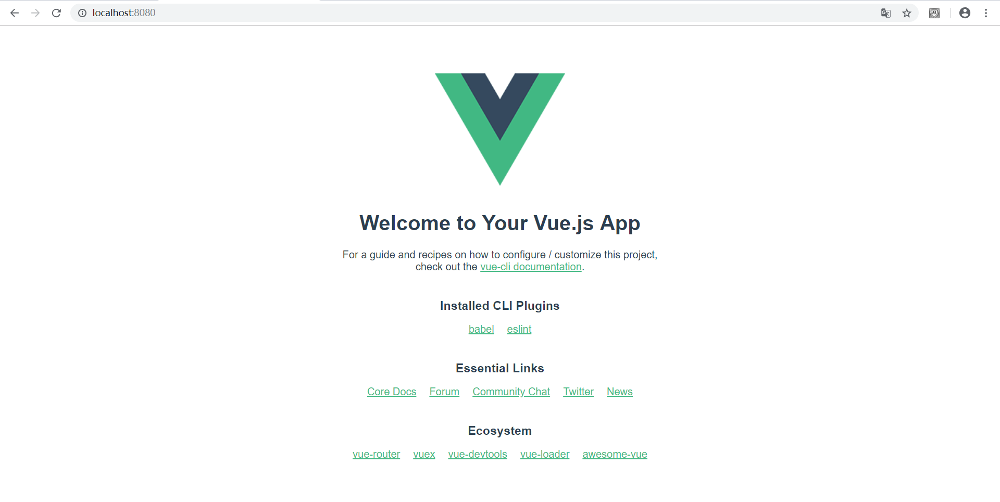
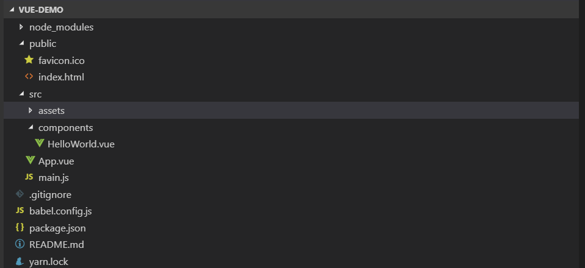
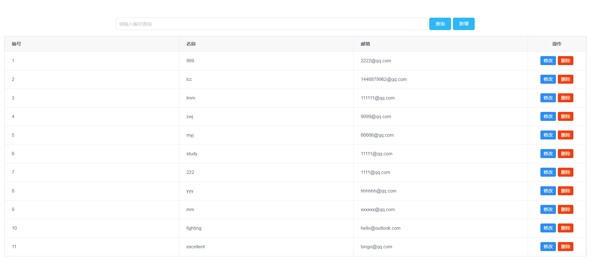
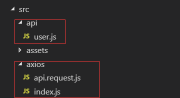
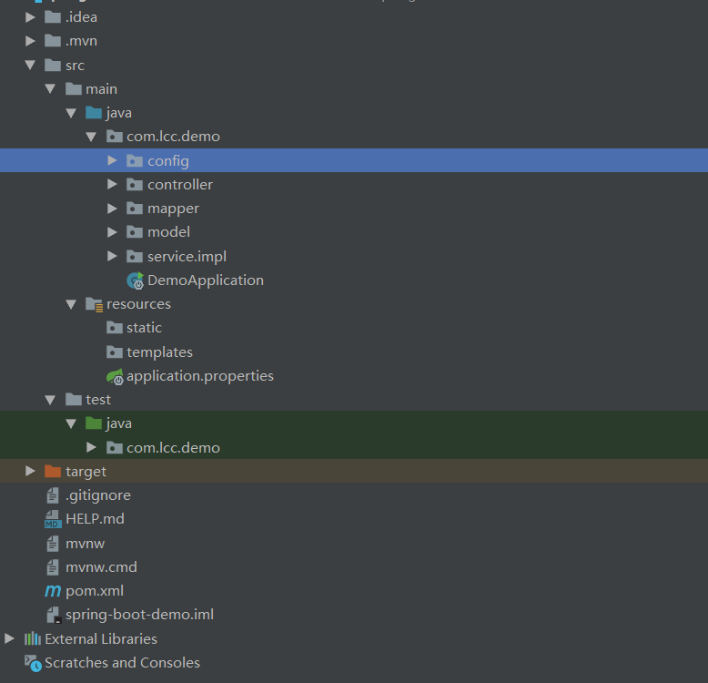

Vue+Spring boot
Vue前端
Vue新建项目
当前我是用的是vue脚手架3.4.1版本
github地址：https://github.com/liangcongcong/Spring-Boot-Vue1
2
3vue create vue-demo //新建项目
cd vue-demo //进入项目文件夹下
yarn serve //运行项目
默认请况下，在浏览器上访问http://localhost:8080/，可以看到如下界面:

项目目录

vue是单页面应用组件，是通过路由跳转实现与其他页面交互。在项目模板中，App.vue相当于外面的最大组件，其他组件均是在其下，利用路由跳转到其他页面。
App.vue页面如下,主要由三部分组成
1 | <template> |
前端页面：
增删改查按钮均能实现与后端数据库交互
表格中的数据均为后端数据库响应http的get请求所返回的。

前端利用axios访问后端api
Axios 是一个基于 promise 的 HTTP 库，可以用在浏览器和 node.js 中。原理：
1 | // get请求 |
npm install --save axios
安装axios后，
在项目中设置js文件与后端进行交互

- index.js中放置api请求基础路径
- api.resquest.js中放置axios，http请求配置信息
- user.js中放置实现增删改查方法和http请求
user.js中代码如下1
2
3
4
5
6
7
8
9
10
11
12
13
14
15
16
17
18
19
20
21
22
23
24
25
26
27
28
29
30
31
32
33
34import HttpRequest from '@/axios/api.request'
export const UserQryAction = () => {
return HttpRequest.request({
url: 'user/',
method: 'get'
})
}
export const UserAddAction = (parameter) => {
return HttpRequest.request({
url: 'user/',
method: 'post',
params: parameter
})
}
export const UserUpdateAction = (parameter) => {
return HttpRequest.request({
url: 'user/',
method: 'put',
params: parameter
})
}
export const UserDelAction = (parameter) => {
return HttpRequest.request({
url: 'user/',
method: 'delete',
params: {
no: parameter
}
})
}
spring boot后端
定义：从根本上来说springboot就是一些库的集合，它能够被任意项目的构建系统所使用，Spring Boot 是所有基于 Spring 开发的项目的。Spring Boot 的设计是为了让你尽可能快的跑起来 Spring 应用程序并且尽可能减少你的配置文件。
利用idea新建spring 项目
项目目录结构：

这里我把springboot项目主要分为五层：model，service,mapper,controller,和config
- model文件夹中为实体类：用户实体类
1 | public class User { |
- service文件夹为业务层：增，删，改，查四个业务的实现
接口1
2
3
4
5
6public interface UserService {
void AddUser(User user);
void delUserById(@Param("no") int no);
void updateUserByNo(User user);
List<User> getUser();
实现类1
2
3
4
5
6
7
8
9
10
11
12
13
14
15
16
17
18
19
20
21
22
23
24
25
26
27
28
29
30
31
32
33
34@Service
public class UserServiceimpl implements UserService {
@Autowired
private UserMapper userMapper;
@Override
public void AddUser(User user) {
userMapper.AddUser(user);
}
@Override
public void delUserById(int no) {
userMapper.delUserById(no);
}
@Override
public void updateUserByNo(User user) {
userMapper.updateUserByNo(user.getName(),user.getEmail(),user.getNo());
}
@Override
public List<User> getUser() {
List<User> userList = userMapper.getUser();
// lamdba表达式的使用
// List<User> userListOrderBy= userList.stream().filter((User u) -> u.getName() == "1212").collect(Collectors.toList());
Collections.sort(userList,(user1, user2) -> user1.getNo() - user2.getNo());
return userList;
}
}
- mapper文件夹为交互层：对数据库的业务操作
1 | @Mapper |
- controller文件夹为控制层：用户可以直接访问到的地方，与前端进行交互
1 | @RestController//处理http请求，用来响应页面。 |
- config文件夹为配置层：配置跨域处理相关信息
1 | @Configuration |
与前端进行交互
1、前端的Http请求会到controller这一层，而controller层根据相应路由信息注解会跳转到相应的类。
2、在框架经过处理以后，最终调用的是mapper层。
3、在执行相应的Sql以后，将会依次返回到controller层，然后在Http的返回中将会以Json串对象返回给前端的调用方。
4、前端在Http的response中拿到返回的值，然后再进行一些处理
连接数据库
1 | spring.datasource.driver-class-name=com.mysql.jdbc.Driver |
注解
- @SpringBootApplication
@SpringBootApplication = @Configuration + @EnableAutoConfiguration + @ComponentScan，简化程序的配置 - @Configuration
注解在类上，表示这是一个IOC容器，相当于spring的配置文件，IOC容器的配置类。 - @ComponentScan
如果扫描到有@Component @Controller @Service等这些注解的类，则把这些类注册为bean。@Controller, @Service, @Repository是@Component的细化，这三个注解比@Component带有更多的语义，它们分别对应了控制层、服务层、持久层的类。 - @RestController
告诉Spring以JSON字符串的形式渲染结果，并直接返回给调用者。 - @RequestMapping
告诉Spring这是一个用来处理请求地址映射的注解。 - @Autowired
可以对类成员变量、方法及构造函数进行标注。从IoC容器中去查找，并自动装配。（去除@Autowired可以运行一下试试） - Mybatis的 @Mapper
注解的接口生成一个实现类